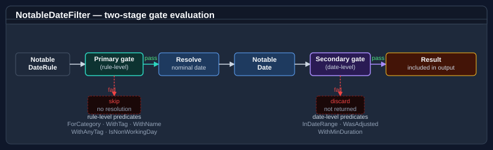

Using NotableDateService
NotableDateService is the main entry point for resolving notable dates — public holidays, observances, religious festivals, regional events — for a given date, range, or year and territory. It is built over an immutable, already-validated NotableDateResource and resolves NotableDate occurrences on demand.
For the vocabulary used below (document vs. resource, rule vs. resolved date, nominal vs. observed, territory containment, …) see Core concepts.
Pattern 1 — a minimal service from a bundled catalogue
Load one of the bundled common catalogues to create a service without referencing a companion data pack — handy for smoke tests and demos. default-minimal carries just New Year's Day:
using Bodu.Globalization.Calendar;
NotableDateResource resource = NotableDateResourceLoader.Load(
CommonNotableDateResources.Resolve("default-minimal")!);
var service = new NotableDateService(resource);
IReadOnlyList<NotableDate> dates = service.Resolve(DateTime.Today.Year, "XX");
// → New Year's Day on 1 January
Region-specific public holidays ship in dedicated Bodu.Globalization.Calendar.<Region> companion packages. See Calendar data packs.
Pattern 2 — load a data pack and filter by territory
Each pack exposes a static factory with CreateService(territory) (and LoadResource(territory) if you want the resource alone):
using Bodu.Globalization.Calendar;
// Loads Australia's resource (imports resolved against the bundled catalogues).
NotableDateService service = AsiaPacificCalendarData.CreateService("AU");
// By-year resolution is an extension (NotableDateServiceExtensions.Resolve):
IReadOnlyList<NotableDate> auDates = service.Resolve(2026, "AU");
IReadOnlyList<NotableDate> nswDates = service.Resolve(2026, "AU-NSW");
foreach (NotableDate date in nswDates)
Console.WriteLine($"{date.Date:d MMM yyyy} {date.DisplayName}");
TerritoryCode containment applies: a query for "AU-NSW" returns dates scoped to AU and AU-NSW (plus any unscoped rules), but not other states. See Territories and regional composition.
All examples below assume a service constructed with the relevant data pack.
Pattern 3 — filter by category
NotableDateFilter is a composable predicate built from static factory methods. Pass it to the filtered Resolve overloads:
using Bodu.Globalization.Calendar;
NotableDateService service = EuropeCalendarData.CreateService("GB");
// Only public holidays for Great Britain.
NotableDateFilter publicFilter = NotableDateFilter.ForCategory(NotableDateCategory.PublicHoliday);
IReadOnlyList<NotableDate> holidays = service.Resolve(2026, "GB", publicFilter);
// Non-working public holidays — combine predicates with And:
NotableDateFilter nonWorkingFilter = NotableDateFilter
.ForCategory(NotableDateCategory.PublicHoliday)
.And(NotableDateFilter.IsNonWorkingDay());
IReadOnlyList<NotableDate> nonWorking = service.Resolve(2026, "GB", nonWorkingFilter);
// Multiple categories in one call:
NotableDateFilter culturalOrObservance =
NotableDateFilter.ForAnyCategory(NotableDateCategory.Cultural, NotableDateCategory.Observance);
Pattern 4 — query a date range
using Bodu.Globalization.Calendar;
NotableDateService service = AsiaPacificCalendarData.CreateService("AU");
var window = new DateRange(new DateOnly(2026, 3, 1), new DateOnly(2026, 4, 30));
IReadOnlyList<NotableDate> autumn = service.Resolve(window, "AU");
Multi-day events (DurationDays > 1) are included when their span intersects the query window; which occurrence (actual or observed) controls inclusion is governed by the resource's ObservedDateRangePolicy.
Pattern 5 — query a single day
using Bodu.Globalization.Calendar;
NotableDateService service = AsiaPacificCalendarData.CreateService("AU");
IReadOnlyList<NotableDate> onDay = service.Resolve(new DateOnly(2026, 4, 25), "AU"); // ANZAC Day
This overload also returns multi-day spans whose nominal date lies on a preceding day but whose span covers the queried date.
Pattern 6 — check non-working days and weekends
These are working-day extension methods in Bodu.Extensions (over DateOnly, DateTime, and DateTimeOffset):
using Bodu.Globalization.Calendar;
using Bodu.Extensions;
NotableDateService service = AsiaPacificCalendarData.CreateService("AU");
DateOnly christmas = new DateOnly(2026, 12, 25);
bool isWeekend = christmas.IsWeekend(); // weekend per the default Mon–Fri working week
bool isNonWorking = christmas.IsNonWorkingDay(service, "AU"); // weekend or a non-working notable date
bool isNonWorkingNSW = christmas.IsNonWorkingDay(service, "AU-NSW");
For full working-day arithmetic (IsWorkingDay, AddWorkingDays, NextWorkingDay, SnapToWorkingDay, WorkingDaysBetween, …) see Working-day arithmetic.
Pattern 7 — enumerate and walk notable dates from a date
Beyond Resolve, the Bodu.Extensions surface offers date-anchored convenience methods over DateOnly — the same set exists over DateTime and DateTimeOffset — that fold the year/month boundary calculation and the territory query into a single call:
using Bodu.Globalization.Calendar;
using Bodu.Extensions;
NotableDateService service = AsiaPacificCalendarData.CreateService("AU");
DateOnly anchor = new DateOnly(2026, 4, 1);
// All notable dates in the anchor's calendar month / year:
IReadOnlyList<NotableDate> inApril = anchor.GetNotableDatesInMonth(service, "AU-NSW");
IReadOnlyList<NotableDate> in2026 = anchor.GetNotableDatesInYear(service, "AU-NSW");
// The next / previous notable date relative to the anchor (optionally filtered):
NotableDate? next = anchor.NextNotableDate(service, "AU-NSW",
NotableDateFilter.ForCategory(NotableDateCategory.PublicHoliday));
NotableDate? prev = anchor.PreviousNotableDate(service, "AU-NSW");
// Lazy enumeration across an arbitrary span (deferred — materialise with ToList where needed):
foreach (NotableDate d in anchor.EnumerateNotableDates(new DateOnly(2026, 12, 31), service, "AU-NSW"))
Console.WriteLine($"{d.Date:d MMM} {d.DisplayName}");
GetNotableDates(service, territory) returns the occurrences on the anchor day itself (the same set as service.Resolve(date, territory)), while EnumerateWorkingDays / EnumerateNonWorkingDays yield the bare DateOnly values across a span. NextNotableDate / PreviousNotableDate return a nullable NotableDate? — null when none exists within the search horizon. See Working-day arithmetic for the full method roster.
Pattern 8 — ID-targeted overrides at load time
Because a resource is immutable, edits to imported concepts are authored as ID-targeted <Overrides> in the document and applied during loading — add a rule, patch one, or remove one:
<Overrides>
<!-- Suppress a base rule … -->
<RemoveRule notableDateRef="boxing-day" ruleRef="default" />
<!-- … and add a company event. -->
<AddRule notableDateRef="company-founding-day">
<Rule id="default"><Strategy><Fixed month="June" day="15" /></Strategy></Rule>
</AddRule>
</Overrides>
See Authoring notable date rules for the full override vocabulary.
Pattern 9 — swap the rule set at runtime
A live change means loading a new resource and swapping it in. Build the service over a MutableNotableDateResourceProvider via ReloadableNotableDateService:
using Bodu.Globalization.Calendar;
var provider = new MutableNotableDateResourceProvider(NotableDateResourceLoader.Load(initialXml));
INotableDateService service = new ReloadableNotableDateService(provider);
// later, when the rules change — the live service picks it up atomically:
provider.Reload(NotableDateResourceLoader.Load(updatedXml));
Pattern 10 — discover what a resource covers
A service projects two read-only views off its immutable resource, each computed once at construction:
using Bodu.Globalization.Calendar;
NotableDateService service = AsiaPacificCalendarData.CreateService("AU");
IReadOnlyList<string> territories = service.GetSupportedTerritories(); // e.g. "AU", "AU-NSW", "AU-VIC", …
IReadOnlyList<CalendarSystem> calendars = service.GetSupportedCalendars(); // e.g. Gregorian (+ Hijri / Hebrew where used)
GetSupportedTerritories returns every distinct territory mentioned by a rule's <Territory> scope; GetSupportedCalendars returns the distinct CalendarSystem values across the rules' <Applicability calendar="…"> (Gregorian, Hijri, UmmAlQura, Hebrew, Persian, ChineseLunisolar). Both are stable for the life of the service; a reload via the reloadable workflow recomputes them for the new resource.
Pattern 11 — supply custom collaborators
The single-argument new NotableDateService(resource) covers documents that reference only built-in algorithms and policies. Documents that reference a custom <Algorithm key="…">, a CollisionPolicy.Custom resolver, custom adjustment trigger / action handlers, or code-first occurrence providers wire those collaborators through NotableDateServiceOptions — an object with five init-only slots — passed to the second constructor:
using Bodu.Globalization.Calendar;
var service = new NotableDateService(resource, new NotableDateServiceOptions
{
Algorithms = algorithmRegistry, // INotableDateAlgorithmRegistry — custom <Algorithm key>
CollisionResolver = collisionResolver, // INotableDateCollisionResolver — CollisionPolicy.Custom
Handlers = actionHandlers, // IAdjustmentHandlerRegistry — AdjustmentAction.Custom
TriggerHandlers = triggerHandlers, // IAdjustmentTriggerHandlerRegistry — AdjustmentTrigger.Custom
Providers = codeFirstProviders, // IEnumerable<INotableDateProvider>
});
Every slot is optional and defaults to null. There is no positional-collaborator constructor — pass only the slots a document needs. See Building and extending the service.
Working with NotableDate results
NotableDate is an immutable record. Key members:
| Member | Description |
|---|---|
Date |
The emitted (observed) date — the post-adjustment date to display. |
ActualDate |
The originally calculated (nominal) date. |
IsObserved |
Whether Date differs from ActualDate because an adjustment applied. |
EndDate |
The inclusive last day (Date + DurationDays − 1). |
DurationDays |
Span in days (1 for single-day events). |
DisplayName |
The display name (subject to optional localisation). |
Category |
NotableDateCategory value. |
Priority |
Tie-break weight carried from the rule; consulted by the collision policy when several dates share a day. |
TerritoryCode |
The territory the date applies to. |
IsNonWorkingDay |
Whether the date is flagged as a non-working day. |
AdjustmentPolicyId, AdjustmentReason |
Which adjustment policy moved the date, and why (when IsObserved). |
Identity (NotableDateId, RuleId) |
The originating concept and rule. |
Tags |
Optional non-exclusive classification tags. |
foreach (NotableDate date in service.Resolve(2026, "AU"))
{
Console.WriteLine($"{date.Date:d} {date.DisplayName}");
if (date.DurationDays > 1)
Console.WriteLine($" Multi-day: ends {date.EndDate:d}");
if (date.IsObserved)
Console.WriteLine($" Observed (nominal was {date.ActualDate:d}, via {date.AdjustmentPolicyId})");
}
Expanding observed-only results into a full timeline
Data packs whose adjustment policies emit ObservedOnly return a single occurrence per adjusted date, anchored on the observed (substitute) day — the nominal day survives only in ActualDate. When you want the full sequential story, WithActualOccurrences() on NotableDateSequenceExtensions synthesizes the missing actual occurrences and re-sorts by the standard Resolve ordering — the consumer-side equivalent of an ActualAndObserved emission:
NotableDateService service = AsiaPacificCalendarData.CreateService("AU");
// 2021: Christmas (Sat 25th) and Boxing Day (Sun 26th) were both observed on the following
// working days, so the observed-only pack returns occurrences dated 27 and 28 December.
IReadOnlyList<NotableDate> resolved = service.Resolve(
new DateRange(new DateOnly(2021, 12, 24), new DateOnly(2021, 12, 29)), "AU");
// Expand: 25 and 26 December reappear as actual occurrences → 24, 25, 26, 27, 28.
IReadOnlyList<NotableDate> timeline = resolved.WithActualOccurrences();
foreach (NotableDate date in timeline)
Console.WriteLine($"{date.Date:d} {date.DisplayName} {(date.IsObserved ? "(observed)" : "(actual)")}");
Synthesized occurrences match the shape the engine emits for the actual half of ActualAndObserved (IsObserved is false, no adjustment policy or reason, all other fields — including DisplayName — unchanged), and expansion skips occurrences whose actual day is already present, so the method is idempotent and a no-op for packs that already emit both. A synthesized date can precede the range you originally queried; apply NotableDateFilter.InDateRange afterwards if strict containment matters.
Composing filters

NotableDateFilter is a predicate over resolved occurrences (Matches(NotableDate)). Build one from the static factories and combine them:
// Category + non-working:
NotableDateFilter nonWorkingHolidays = NotableDateFilter
.ForCategory(NotableDateCategory.PublicHoliday)
.And(NotableDateFilter.IsNonWorkingDay());
// Observed (adjusted) occurrences only:
NotableDateFilter adjusted = NotableDateFilter.WasAdjusted();
// Category pre-screen + date-range:
NotableDateFilter easterWeek = NotableDateFilter
.ForCategory(NotableDateCategory.PublicHoliday)
.And(NotableDateFilter.InDateRange(new DateOnly(2026, 4, 1), new DateOnly(2026, 4, 14)));
// AllOf / AnyOf for multi-filter composition:
NotableDateFilter combined = NotableDateFilter.AllOf(
NotableDateFilter.ForCategory(NotableDateCategory.PublicHoliday),
NotableDateFilter.IsNonWorkingDay(),
NotableDateFilter.WithTag("national"));
The factory set: ForCategory, ForAnyCategory, WithName, WithAnyName, WithId, WithTag, WithAnyTag, WithAllTags, WithMinDuration, IsNonWorkingDay, WasAdjusted, InDateRange, combined with And, Or, Not, AllOf, AnyOf.
Understanding the resolution pipeline
Loading turns a document into a resource; querying turns a resource into occurrences:
NotableDateResourceLoader.Load(xml[, resolver][, algorithms])
parse → resolve <Imports> → apply <Overrides> → assemble → validate
→ immutable NotableDateResource
NotableDateService.Resolve(date | range | year, territory[, filter])
strategy → nominal date → adjustment policies → observed date
→ duplicate/collision settlement → emission → NotableDate set
- Load —
NotableDateResourceLoaderparses the document, resolves<Imports>through the supplied resolver, applies<Overrides>, assembles the definitions, and runs semantic validation, throwingNotableDateValidationExceptionon any error-severity diagnostic. - Resolve — for each applicable rule the IDateCalculationStrategy computes the nominal date; the referenced AdjustmentPolicy shifts it to the observed date when a trigger matches.
- Settle — the resource's ResolutionPolicy reconciles duplicates and same-day collisions and decides which occurrences are emitted.
See The resolution pipeline for the full walk-through with a concrete trace.
Where to go next
- Core concepts — the vocabulary used throughout this guide.
- Territories and regional composition — how
TerritoryCodeand containment govern query results. - Working-day arithmetic —
IsWorkingDay,AddWorkingDays,NextWorkingDay, snap operations. - Calendar data packs — the official Americas / Asia-Pacific / Europe / Middle East / Africa companion packages.
- Authoring notable date rules — XML / JSON documents, imports, and overrides.
- Date calculation algorithms — the built-in keys and how to implement a custom algorithm.
- Bodu.Globalization.Calendar API reference — full type reference.
- Globalization & Calendars guides — every guide in this topic: the runtime, companions, data packs, and the notable-date catalogue.